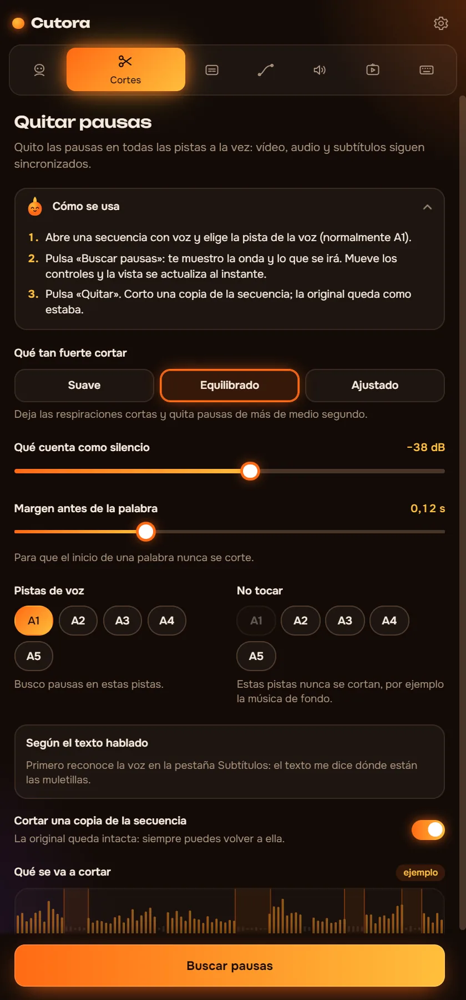
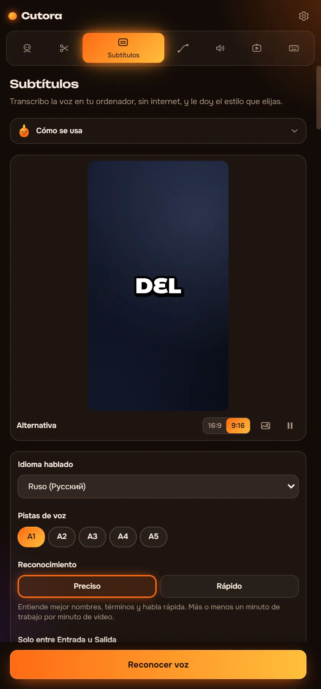
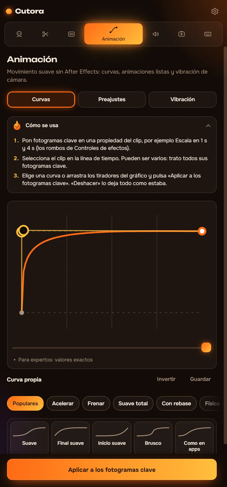
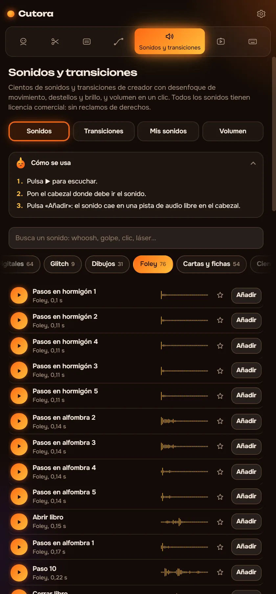
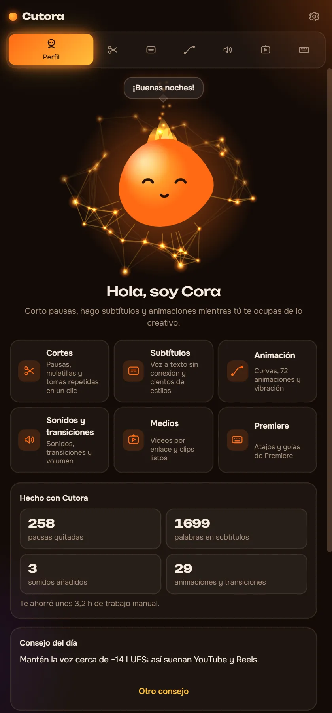

Quita pausas. Añade subtítulos. Dale movimiento.
Cutora es un panel para Premiere Pro que hace por ti la parte lenta de la edición. Funciona en tu ordenador, así que tus vídeos nunca salen de él.
- Windows, Premiere Pro 2022+
- Funciona sin internet
- Pagas una vez
Hola, soy Cora. ¡Tócame!
Mira qué se corta antes de cortar
Cutora encuentra las pausas y las marca en la onda de audio. Elige qué cuenta como silencio y corta. Aquí tienes un clip de 90 segundos para probar.
- Duración del vídeo
- 1:30
- Más corto en
- 0:00
En Premiere corta todas las pistas a la vez y cierra los huecos. Trabaja sobre una copia de tu secuencia, y un Ctrl+Z lo devuelve todo.
Seis módulos, un panel
Cada módulo hace un trabajo que harías a mano o con otro plugin.
Quita pausas en todas las pistas a la vez
Vídeo, voz y música siguen sincronizados. Ves cada corte en la onda antes de que cambie nada.
- Tres intensidades o tu propio nivel de silencio
- Quita los «eh», «em» y las tomas fallidas usando la transcripción
- Corta una copia de la secuencia, el original queda intacto

Subtítulos que se mueven con la voz
El reconocimiento de voz funciona en tu ordenador. Elige un estilo, corrige una palabra si hace falta y los subtítulos llegan a la línea de tiempo.
- Unos 90 idiomas hablados, sin internet
- Cientos de estilos animados y más de 160 fuentes
- Edita el texto después y actualiza los subtítulos con un clic

Movimiento suave sin After Effects
Da a tus fotogramas clave una aceleración real o pon una animación lista en un clip.
- Curvas de aceleración para cualquier fotograma clave, también las tuyas
- 72 animaciones listas: entradas, salidas y zooms de golpe
- 25 sacudidas de cámara, de un suave cámara en mano a una explosión

Transiciones con sonido, sincronizadas
Las transiciones van en una capa de ajuste y cada una trae su sonido.
- Whooshes, golpes y subidas grabados de verdad
- Iguala el volumen de todo el vídeo con un clic
- Añade tus propios packs de sonido desde cualquier carpeta

Clips y vídeos por enlace
Pega un enlace y el vídeo llega a tu proyecto. Sin descargadores ni conversores.
- Importa desde YouTube, Instagram o TikTok por enlace
- Un pack de clips de pantalla verde y gameplay
- Cada inserción se puede deshacer como cualquier otra edición

Cora responde tus preguntas
¿Atascado? Pregunta a Cora cómo hacer algo en Cutora o en edición. Conoce cada pestaña y lo básico de una buena edición.
- Responde sin internet
- Habla los seis idiomas de la interfaz
- Un recorrido corto en el primer inicio

Cutora para Premiere Pro
$29.99$39
Un solo pago. Sin suscripción.
- Los seis módulos: Corte, Subtítulos, Movimiento, Sonidos, Medios y Cora
- Tu clave funciona en dos ordenadores
- Funciona sin internet tras una activación
- Interfaz en 6 idiomas
- Pack de pantalla verde y gameplay incluido
Paga con tarjeta bancaria mediante Lava.top o con cripto (USDT).
Preguntas
¿Qué necesito para usar Cutora?
Windows 10 u 11 y Adobe Premiere Pro 2022 o posterior.
¿Funciona en Mac?
Todavía no. Por ahora Cutora funciona en Windows.
¿Cómo lo recibo después de pagar?
Recibes un correo con un enlace de descarga y tu clave. La guía de instalación de este sitio te acompaña en cinco minutos.
¿En cuántos ordenadores puedo usarlo?
En dos. Si cambias de ordenador, escribe a soporte y moveremos tu clave.
¿Necesita internet?
Solo para activar la clave una vez e importar vídeos por enlace. Los cortes, los subtítulos y el movimiento funcionan sin conexión.
¿Qué idiomas admite?
El panel habla inglés, ruso, español, portugués, alemán y árabe. Los subtítulos funcionan con unos 90 idiomas hablados.